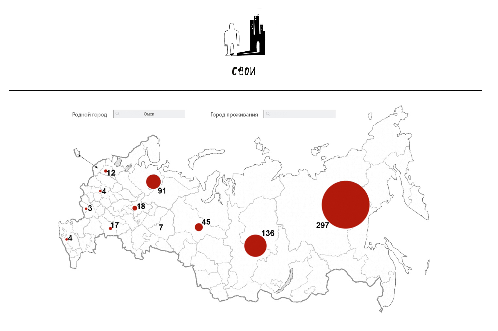

YFNY | презентация молодежных проектов
Проект посвящен людям, покинувшим родной город. Его основная цель объединить людей, а также показать с какими сложностями и радостями приходится сталкиваться мигранту в повседневной жизни.
#истории мигрантов #интервью
Проект "Свои" - это истории о нас. О тех, кто покинул родные края в поисках чего-то нового. Что нами движет? Через что нам пришлось пройти и как впоследствии изменится наша жизнь? В серии интервью мигранты рассказывают о своих открытиях, разочарованиях и радостях. Мы уверены, что ответы на эти вопросы помогут кому-то еще принять важнейшее решение в жизни. Переезд изменил всех нас, мы теперь чуть-чуть иные, и нам нужно держаться вместе. Нужно знать, что мы не одиноки.
Проект собрал 900 участников, более 60 интервью с ребятами со всех уголков мира. Мы получили Государственный грант на дальнейшее развитие. Сейчас в активной фазе всемирный новогодний обмен поздравительными открытками.
Планируется сделать интерактивную карту "Своих", где бы любой желающий мог найти земляков на новом месте жительства и связаться с ними. Также планируется реструктуризация существующей группы и расширение ее функционала: добавятся возможности найти стажировку за рубежом, друзей по переписке или интересные методики изучения языка. Также в период новогодних праздников пройдет ряд встреч "Своих" в Сочи, Санкт Петербурге, Москве, Штутгарте
Нам нужны помощники, для продвижения проекта, поиска героев и связям с общественностью. А так же нам нужен программист для создания интерактивной карты мира на сайте. Очень нужен программист! Сам сайт может быть на вордпрессе, это не принципиально.
Найти веб-программиста :) Найти новые истории эмигрантов для публикации.
Тел.: (646) 321-9947Эл. почта: 1991.tatiana.g@gmail.com